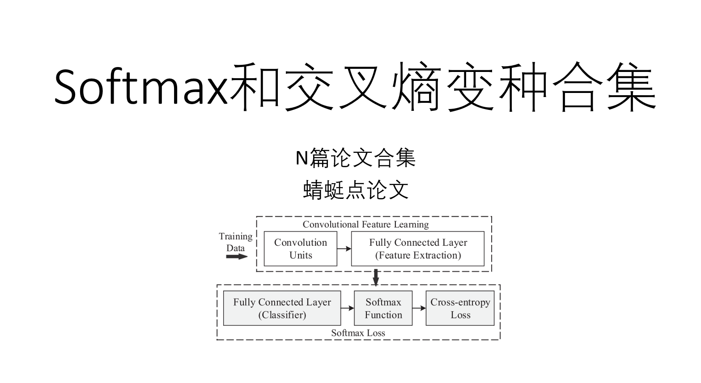

原始的softmax和交叉熵CrossEntropy
Softmax使用Boltzmann分布（又名吉布斯分布）

二维时特征分布示意图：

怎么改
| “能给他接的全给他接上， 什么是成功人士你知道吗？” 所以，我们的原则就是： ！！！能改的都给它改了！！！ |
|
这么改
| 所以，可以从以下角度 1. 分布， 玻尔兹曼分布 -> 高斯分布 2. 距离 2.1 到类中心的距离 2.2 到分类超平面的距离 3. 内积角度 4. 范数， 半径为1的球面 5. 对比的对象，不跟自己其他类的输出值比较了 |
|
从内积角度
给角度加间隔
论文：Large-Margin Softmax Loss for Convolutional Neural Networks， ICML2016 https://arxiv.org/abs/1612.02295
从距离
到各个类的中心距离 Center Loss
即L2距离 $$ \mathcal{L}C = \frac{1}{2} \sum^N | \bold{x}{i}-\bold{\mu}|_{2}^{2} $$
主要问题是
- $\mu$ 很容易聚到一起， 所以一般是联合softmax一起使用
- 没有logits逻辑输出值，没有概率。

论文：A Discriminative Feature Learning Approach for Deep Face Recognition, ECCV 2016 https://link.springer.com/chapter/10.1007/978-3-319-46478-7_31
径向基核距离
Radial Basis Function $$ \psi(X) = \psi(|X - C|) $$ 本论文里使用的是高斯： $$ K_{i, j}=K_{\mathrm{RBF}}\left(\boldsymbol{x}{i}, \boldsymbol{W}\right)=e^{-\frac{d_{i, j}}{\gamma}}=e^{-\frac{\left|\boldsymbol{x}{i}-\boldsymbol{W}\right|_{2}^{2}}{\gamma}} $$
Radial Basis Function Softmax loss:

这篇论文里，有对softmax不足的分析， Rethinking Softmax Cross-Entropy Loss for Adversarial Robustness 也有分析 softmax, cross-entropy 的不好
论文：RBF-Softmax: Learning Deep Representative Prototypes with Radial Basis Function Softmax, ECCV 2020 https://www.ecva.net/papers/eccv_2020/papers_ECCV/papers/123710290.pdf
从分布


总结
Github上 PyTorch 实现
https://github.com/YirongMao/softmax_variants
this man is lazy, nothing left